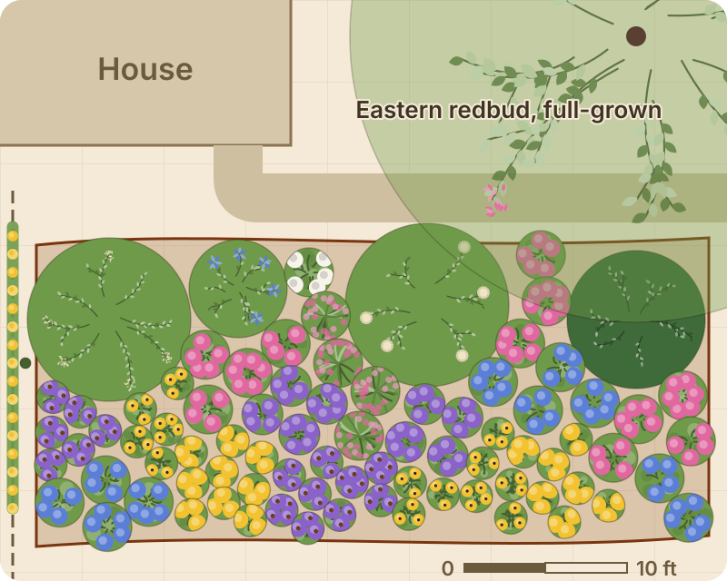

Plan a garden that actually works.
FullGrown draws every plant at its full-grown size, to scale, on your own yard, so you can see in March what your beds will look like in five years. Every fact behind it says where it came from.

Drawn to scale
Sketch your yard, house and beds. Place plants at their mature spread, not the size of the pot.
Right for your ZIP
Hardiness and frost dates where you live, whether a plant is native to your state, when it blooms there, and where it grows wild near you.
Every fact sourced
Each value names its source: extension services, herbarium records, Kew's World Checklist, and the text of state and federal plant laws.
If you heard from us about your data
Thank you for reading. FullGrown shows every fact with the source it came from, by name. We follow each site's terms, and we ask first wherever they don't already allow our use.
Questions, or a correction: hello@fullgrown.garden